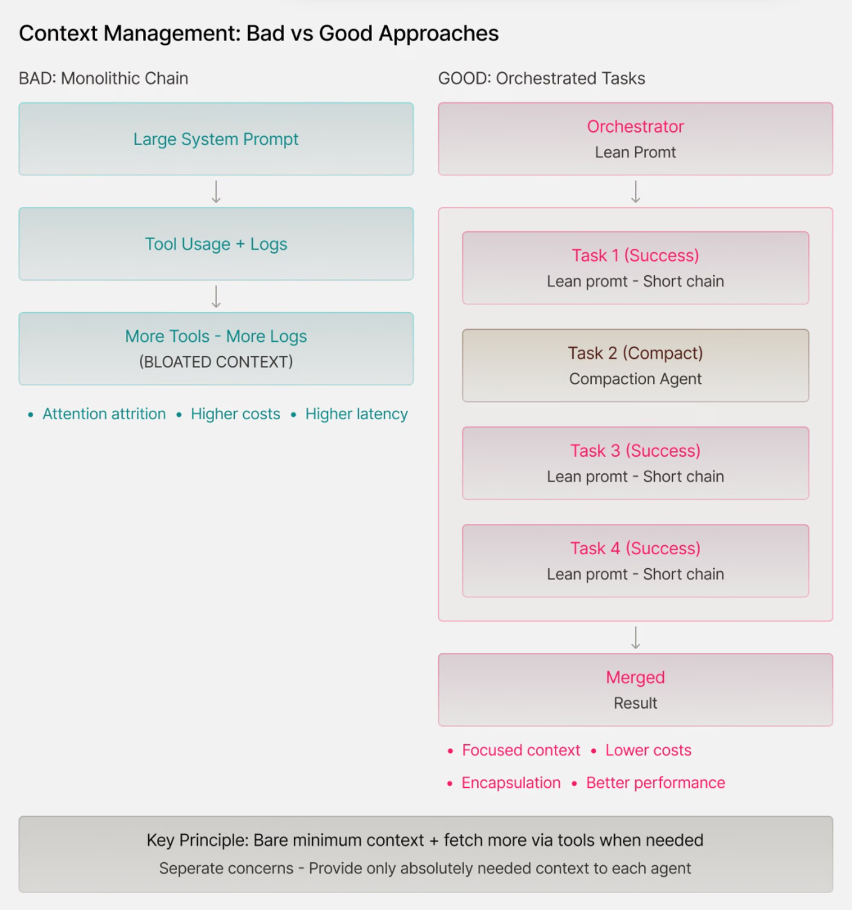
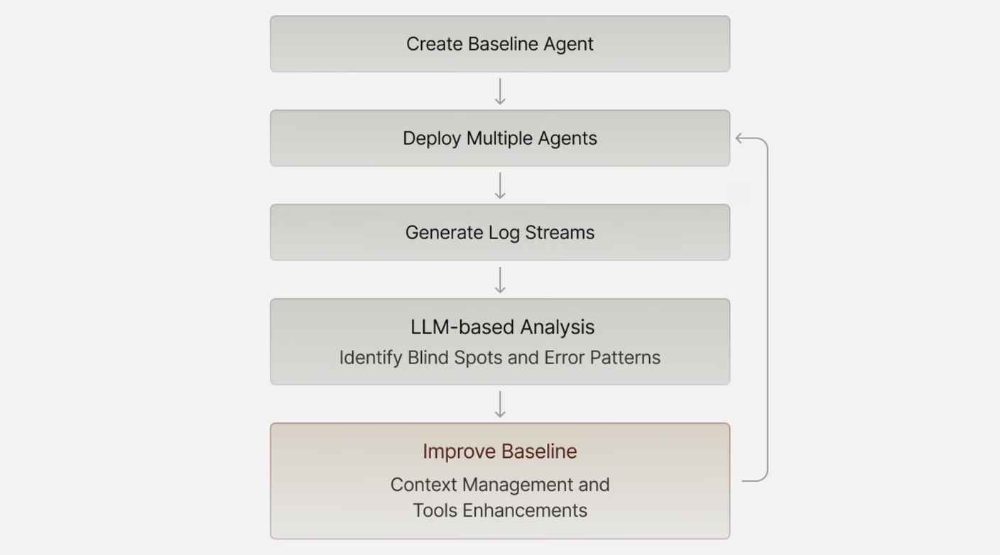

构建生产级智能体系统的实用经验
作者：Arseni Kravchenko
2025年7月28日
9分钟
时不时地，人们会问我：
“我刚接触智能体开发，正在构建一些东西，但感觉缺少一些部落知识。帮我赶上进度吧！”
我很想推荐一些严肃的内容，比如多周课程（例如HuggingFace或Berkeley的课程），但并不是每个人都有兴趣深入到那种程度。
所以我决定收集六个简单的经验教训，这些在app.build开发过程中对我帮助很大。这篇文章在某种程度上受到了app.build背后的设计决策的启发，但经过了泛化处理，旨在为智能体工程新手提供快速指南。
我长期对提示词工程持怀疑态度，它看起来更像是萨满仪式而不是任何接近工程的东西。所有那些”我会给你100美元”或”我的祖母快死了，需要这个”或”要100%准确，否则”的方法可能在利用本地模型效率低下时作为局部波动有用，但从长期来看从未奏效。
当我意识到一个简单的事实时，我改变了对提示词/上下文工程的看法：现代LLM只需要直接详细的上下文，不需要技巧，但需要清晰和缺乏矛盾。就是这样，不需要操纵。模型擅长遵循指令，问题往往只是指令的模糊性质。
所有LLM供应商都有关于如何提示其模型最佳实践的教育资源（例如，Anthropic的资源和Google的资源）。只需遵循它们，确保你的指令直接而详细，不需要自作聪明的技巧。例如，这里是我们用来让Claude为ast-grep生成规则的系统提示词 - 没有什么技巧，只是关于如何使用智能体几乎不了解的工具的详细信息。
我们喜欢的一个技巧是用LLM的Deep Research类变体创建的草稿来引导初始系统提示词。它通常需要人工改进，但是一个可靠的基线。
保持上下文的共享部分对提示词缓存机制是有益的。从技术上讲，也可以缓存用户消息，但构建上下文使系统部分大而静态，用户部分小而动态的效果很好。
好的，现在有了可靠的系统提示词。但是”上下文工程”成为”提示词工程”之后的最新趋势是有原因的。
上下文管理是一个需要权衡的主题。没有适当的上下文，模型往往会产生幻觉，偏离轨道或者在上下文过大时拒绝提供答案。它们受到注意力衰减的影响（模型难以专注于非常长上下文的相关部分，导致对埋藏在中间的关键细节性能下降），成本更高，延迟更大。
我们发现有用的原则是首先提供最少的知识，如果需要通过工具获取更多上下文的选项。例如，在我们的情况下，这可能意味着在提示词中列出所有项目文件，并提供一个工具来读取与请求的更改相关的文件；尽管如果我们确定某些文件内容是关键的，我们可以提前在上下文中包含其内容。
来自反馈循环的日志和其他制品可能很快就会使上下文变得臃肿。自动应用的简单上下文压缩工具可以提供很大帮助。封装对于面向对象编程来说是一个炒作词汇，但对于上下文管理来说更加重要：分离关注点，只为你的智能体解决方案的每一部分提供它绝对需要的上下文。

AI智能体的核心特性是工具调用，LLM + 暴露的工具 + 基本控制流操作符的组合构成了智能体。
为智能体设计工具集有点类似于设计API…但实际上更复杂。人类API用户更有能力理解字里行间的意思，可以浏览复杂的文档并找到变通方法。为智能体创建的工具通常更有限（拥有太多工具是污染上下文的一种方式），应该有直接明了的接口，总体上为随机的LLM世界带来秩序。当为人类用户构建时，设计一条主路和一些处理边界情况的技巧可能是可以的；LLM很可能会误用你的漏洞，这就是为什么你不希望有任何漏洞。
优秀的工具通常在相似的粒度级别上运行，并具有有限数量的严格类型化参数。它们专注且经过充分测试，就像你准备提供给聪明但容易分心的初级开发人员的API一样。强烈建议幂等性以避免状态管理问题。大多数软件工程agent拥有不到10个多功能工具（如read_file、write_file、edit_file、execute…）
每个工具有1-3个参数（appbuild示例， opencode示例），并且
根据上下文附加额外工具可能也是合适的。
在某些情况下，设计一个agent来编写某种DSL（领域特定语言）代码并执行操作，而不是逐一调用工具，是一个很好的想法。这种方法被
smolagents广泛推广；然而，它需要为agent执行设计一套合适的函数集合。尽管顶层结构发生了变化，但主要思想仍然有效：简单、充分但无歧义且无冗余的工具对agent性能至关重要。
优秀的agentic解决方案结合了LLM和传统软件的优势。这种结合的一个
关键方式是设计类似于actor-
critic方法的两阶段算法：其中actor决定行动，critic评估这些行动。
我们发现让LLM Actor具有创造性，让Critic保持严格是有用的。在我们的应用生成世界中，这意味着Actor创建新文件或编辑它们，Critic确保这些代码符合我们的期望。期望基于手工制作的标准：我们希望代码可以编译、通过测试、类型检查、linter和其他验证器。Critic的工作主要是确定的，但不是100%——例如，我们可以独立使用LLM生成测试，然后运行测试套件。
在为任何垂直领域构建agent时，包含领域特定的验证至关重要。这需要定义和检查必须保持的领域不变量，无论
agent的具体方法如何——这是ML工程师所说的包含”归纳
偏差“的概念。
软件工程是受AI agent影响最大的行业，正是出于这个原因。反馈循环非常有效：使用编译器、linter和测试等非常直接的验证器很容易过滤掉不良结果。这在两个层面上影响性能：基础模型在大规模可验证奖励上进行训练，后来产品工程师可以利用这些学习到的属性。
同样的思维适用于其他领域。例如，如果面向旅行的agent建议多程航班，首先要验证这些连接确实存在。同样，如果记账agent的结果不满足复式记账原则，那就是不良结果，不应该被接受。
反馈循环与许多框架中可用的”护栏”概念紧密相关。Agent在恢复方面表现中等。有时，不良结果值得尝试修复（向LLM发送下一条消息，反映”嘿，你之前的解决方案因为X而不可接受”），其他时候一连串的错误修复已经无法修复了——直接丢弃并重新尝试。
Agentic系统应该准备好应对硬故障和软故障，采用不同的恢复策略，这些恢复策略与护栏一起构成了
反馈循环的本质。你可以用类似于蒙特卡罗树
搜索概念的方式来思考它：一些分支是有希望的，应该进一步开发，一些是死胡同，应该被切掉。
一旦你有了基本的agent和附加的反馈循环，你就可以迭代和改进。错误分析一直是AI/ML工程的基石，AI agent也不例外。
错误分析的一种方法是回顾常见故障，但agent是如此高效！通常很容易生成数十个agent，让它们在不同任务上运行，生成大量日志（希望你的反馈循环内置了一些可观察性功能，对吧？）。无论你多么高效，agent的日志流很可能是不可读的。
这就是为什么简单的元agentic循环非常强大：
建立基线
获取一些轨迹/日志
用LLM分析它们（感谢Gemini的1M上下文）
基于收到的见解改进基线。
这通常会揭示上下文管理或提供的工具中的盲点。

如今LLM很强大，这就是为什么当agent做出真正愚蠢的事情或完全忽略指令时，人们会很快感到沮丧。现实是，指令调优模型也非常容易受到奖励黑客攻击，意味着它们会尽一切可能满足被解释的目标。然而，这不一定是原始系统设计者心中的目标。
这个洞察是：一个令人恼火的问题可能不是由LLM缺陷引起的，而是由系统错误引起的，比如缺少处理解决问题所需的工具或系统提示中的模糊段落。
最近，我在大声咒骂：代理到底为什么不使用提供的集成来获取数据，而是使用模拟的随机数据，尽管我明确要求不要这样做？我查看了日志，意识到愚蠢的是我自己——我没有为代理提供合适的API密钥，所以它试图获取数据，以同样的方式连续失败了多次，然后转向了变通方法。这不是唯一的事故：例如，我们还观察到类似的行为，代理试图写入文件但缺少文件系统访问权限。
[结论]
构建有效的AI代理不是要找到一个伟大提示或高级框架的银弹——它是系统设计和正确的软件工程。专注于清晰的指令、精简的上下文管理、强大的工具接口和自动化验证循环。当你的代理让你沮丧时，首先调试系统：缺少工具、不清晰的提示或不充分的上下文通常是罪魁祸首，而不是模型限制。最重要的是，将错误分析视为开发过程中的一等公民。让LLM帮助你理解代理在哪里失败，然后系统性地解决这些失败模式。目标不是完美的代理——而是可靠的、可恢复的代理，能够优雅地失败并可以迭代改进。
分享